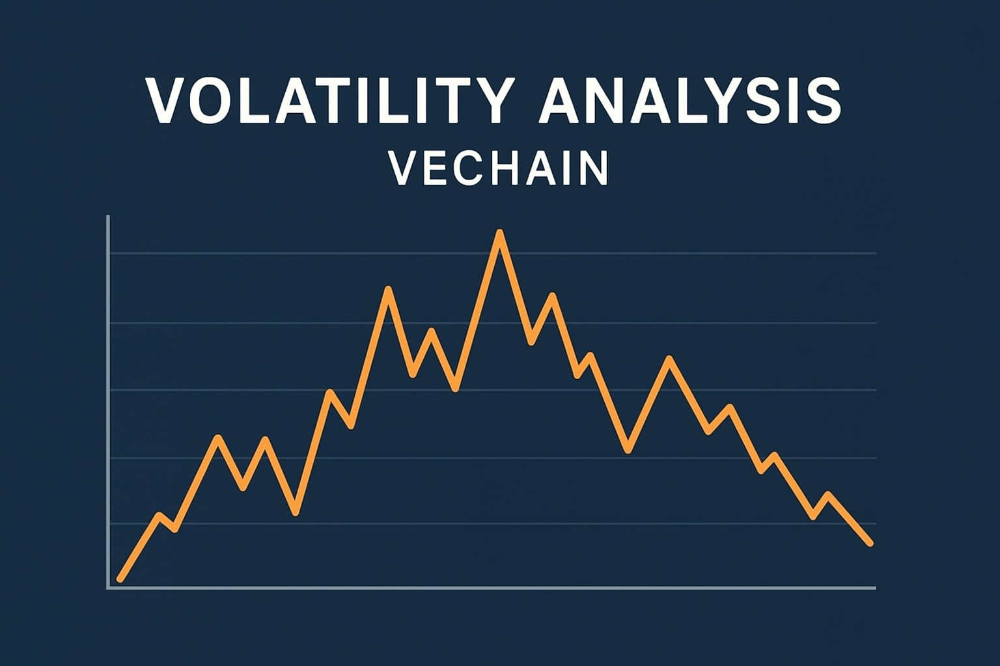

VeChain Price Prediction for End of 2025: In-Depth Analysis and Insights
The information in this article is provided for educational purposes only and is not investment advice. Cryptocurrency investments carry risks.
Introduction
As of August 20, 2025, 01:14 AM EEST, VeChain (VET) is trading at approximately $0.0249, reinforcing its position as a leading blockchain platform for supply chain management and enterprise solutions. Founded in 2015 by Sunny Lu, VeChain leverages its dual-token system (VET and VTHO) to enhance transparency, traceability, and efficiency across industries like logistics, retail, and sustainability. With partnerships like Walmart China, BMW, and DHL, and recent advancements like the VeChain Renaissance roadmap, VeChain is poised for growth. This article provides a comprehensive analysis of VET’s price outlook for the end of 2025, exploring bullish and bearish scenarios, key growth drivers, and potential risks based on current market trends and ecosystem developments.

Current Situation
As of August 20, 2025, VeChain’s price is around $0.0249, down 90.35% from its all-time high of $0.2452 in April 2021 but up 30% from $0.019 in June 2025. Over the past 30 days, VET has recorded 50.02% green days with a volatility of 6.36%, reflecting moderate stability. The Fear and Greed Index at 64 (Greed) indicates bullish sentiment, driven by VeChain’s recent partnerships with Franklin Templeton and Crypto.com, and the upcoming Hayabusa mainnet upgrade in September 2025. With a market cap of approximately $2.14 billion and a circulating supply of 85.99 billion VET, VeChain remains a top-50 cryptocurrency, supported by high trading volumes of ~$47 million daily.
Price Predictions for End of 2025
Analyst forecasts for VeChain by December 2025 vary due to market dynamics and ecosystem developments. Bearish scenarios predict a decline to $0.018–$0.022 if a projected 30–50% market correction occurs in early 2025. Moderate projections estimate VET trading between $0.04 and $0.06, supported by steady enterprise adoption and technical upgrades. Bullish forecasts suggest VET could reach $0.08–$0.15, with some analysts like DigitalCoinPrice and GOV Capital projecting highs of $0.0807–$0.10411 if adoption accelerates. Ultra-optimistic predictions of $75 are unrealistic, requiring a 30,000% surge. A realistic range is $0.036–$0.091, with an average around $0.06–$0.0755, reflecting a 140–200% increase from current levels.
Factors Driving Price Growth
- Enterprise Adoption: Partnerships with Walmart China, BMW, DHL, and PwC enhance VeChain’s role in supply chain transparency and efficiency.
- VeChain Renaissance Roadmap: The Hayabusa mainnet upgrade, including a new consensus mechanism and staking model, aims to boost scalability and adoption.
- Institutional Support: Collaborations with Franklin Templeton and Crypto.com for custody solutions increase VET’s credibility and liquidity.
- Market Rally: A projected crypto bull run in Q1 2025, post-Bitcoin halving, could drive VET’s price, especially with altcoin season momentum.
- Web3 and Sustainability: Initiatives like VeBetterDAO and NFT-based staking align with UN SDGs, attracting eco-conscious enterprises and users.
Risks and Downward Factors
- Market Volatility: A projected 30–50% market correction in early 2025 could pressure VET’s price, especially if altcoin momentum wanes.
- Regulatory Risks: Stricter regulations, particularly in the US, could limit VET’s accessibility or lead to exchange delistings.
- Competition: Other supply chain-focused blockchains like IBM’s Hyperledger or Ethereum-based solutions could challenge VeChain’s market share.
- Limited Network Usage: If enterprise adoption lags, reduced blockchain activity could diminish VET’s practical relevance and price.
Volatility Analysis
From July to August 2025, VeChain’s price rose from $0.0224 to $0.0249, a 11.16% gain with a volatility of 6.36%. Technical indicators show mixed signals: the 50-day moving average is rising, indicating short-term bullishness, while the 200-day moving average has been declining since January 2025, suggesting longer-term weakness. The Relative Strength Index (RSI) at 49.27 indicates a neutral market, neither overbought nor oversold. VeChain’s resilience during the 2021–2022 bear market, supported by enterprise revenue, and recent bullish patterns (e.g., a bullish engulfing pattern on the weekly chart) suggest potential for growth. A projected market recovery in Q1 2025, combined with the Hayabusa upgrade, could drive VET toward $0.08–$0.15 by year-end.
Conclusion
By the end of 2025, VeChain’s price is projected to range between $0.036 and $0.091, with the potential to reach $0.15 in a bullish market driven by enterprise adoption, the VeChain Renaissance roadmap, institutional support, and a crypto market rally. However, investors should remain cautious of market volatility, regulatory uncertainties, and competition from other blockchains. Thorough research and risk management are essential before investing in VeChain. Always consult financial experts and conduct your own analysis to navigate the volatile crypto market.